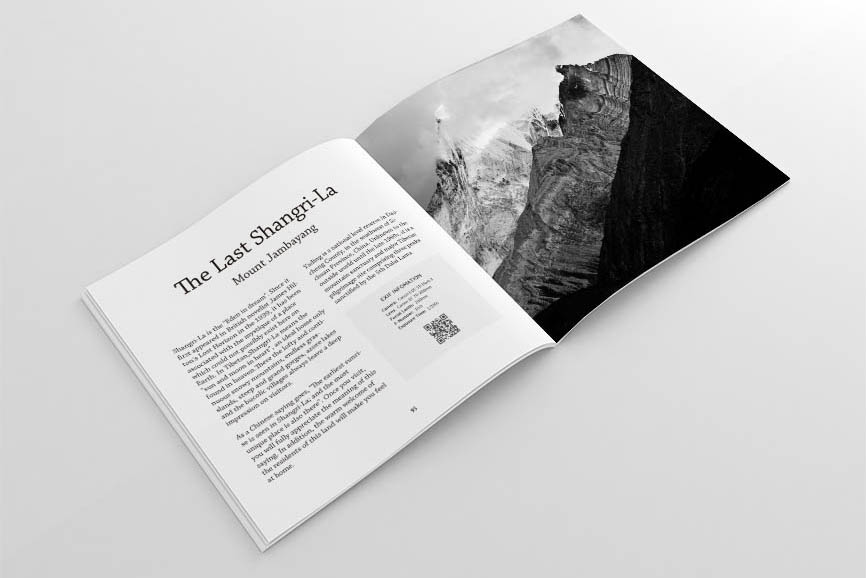
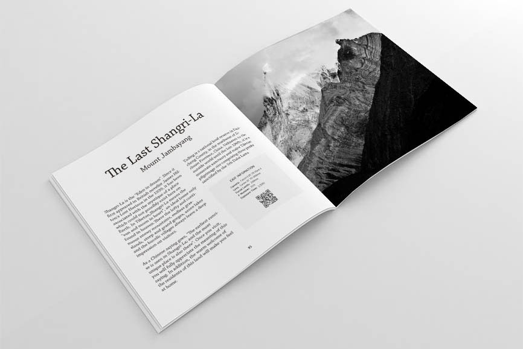

我爱设计
我设计各种各样的东西，从平面设计到室内，再到用户界面和网页设计。 我很喜欢把我的创造性发挥到极限，更享受从无到有、渐渐完美的设计过程。 我爱设计，也相信它会让生活更美好。
 

逻辑思维
我喜欢挑战自己，而编程恰好充满挑战性。 更重要的是，我的逻辑思维因此得到提高。 在过去六年里，我先后学了 Visual Basic、HTML、CSS、JavaScript、PHP 和 SQL 等多种计算机语言， 我还在不断学习新的编程语言，比如 Swift 和 Objective-C。 你现在正在浏览的网站是我的个人主页，我每年都会把它彻底地重新设计和开发一次， 以展示我在过去一年中学习到的相关新知识。